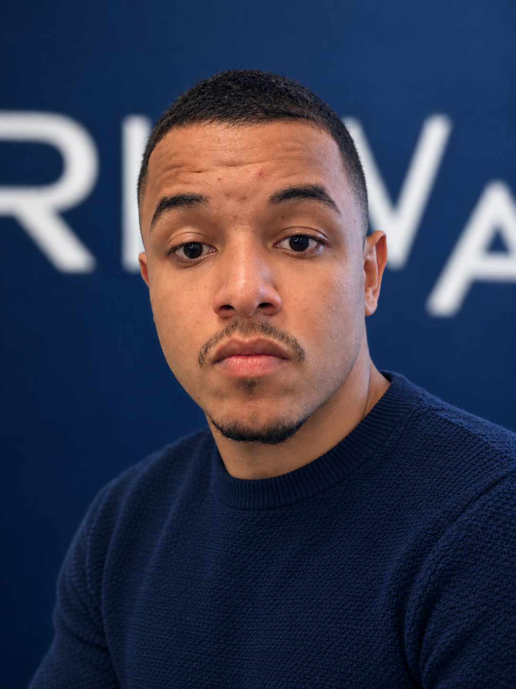

Ideias que viram resultado, não só apresentação.
A maioria dos negócios ainda opera no manual — atendimento, prospecção, relatórios, processos — enquanto a tecnologia pra automatizar boa parte disso já existe e está acessível. É essa a lacuna que a Launch Line existe pra fechar: uma operação enxuta, apoiada em inteligência artificial, automação e estratégia aplicada, sem fórmula genérica.
Arthur Leon
Fundador
Arthur lidera a visão de produto e a frente técnica da Launch Line — da arquitetura das automações até a implementação dos agentes de IA em produção, sempre a partir de um diagnóstico real do negócio antes de qualquer linha de código.

Daniel RangelDaniel Rangel
Co-fundador
Daniel cuida da estratégia comercial e da relação com clientes, garantindo que cada automação, cada fluxo de marketing e cada decisão esteja conectada a um resultado real de negócio.
Cinco frentes de trabalho, um único objetivo: resultado mensurável.
Inteligência Artificial
Agentes e automações com IA para atendimento, triagem de leads e tarefas repetitivas do dia a dia.
Automação
Conecto CRM, planilhas, WhatsApp e e-mail num fluxo único, sem retrabalho manual entre ferramentas.
Marketing
Aquisição e funis orientados a dados, com foco em conversão real — não em métrica de vaidade.
Estratégia
Diagnóstico do negócio, priorização do que realmente importa e um plano de ação claro.
Negócios
Estruturação de processos e operação pra crescer sem depender só de contratar mais gente.
Um processo direto, do diagnóstico ao resultado em produção.
Diagnóstico
Mapeio a operação atual: onde está o gargalo, o que já funciona e o que trava o crescimento.
Plano
Defino prioridades e desenho a solução — IA, automação, marketing ou estratégia — sob medida.
Implementação
Integro ferramentas, construo as automações e ativo os canais definidos no plano.
Acompanhamento
Acompanho os números e ajusto o que for preciso. Resultado é processo contínuo, não entrega única.
Vamos conversar sobre o seu negócio.
Uma conversa direta de ~20 minutos pra entender onde a Launch Line pode gerar mais resultado pra você.
Agendar no WhatsApp Ou enviar um e-mail